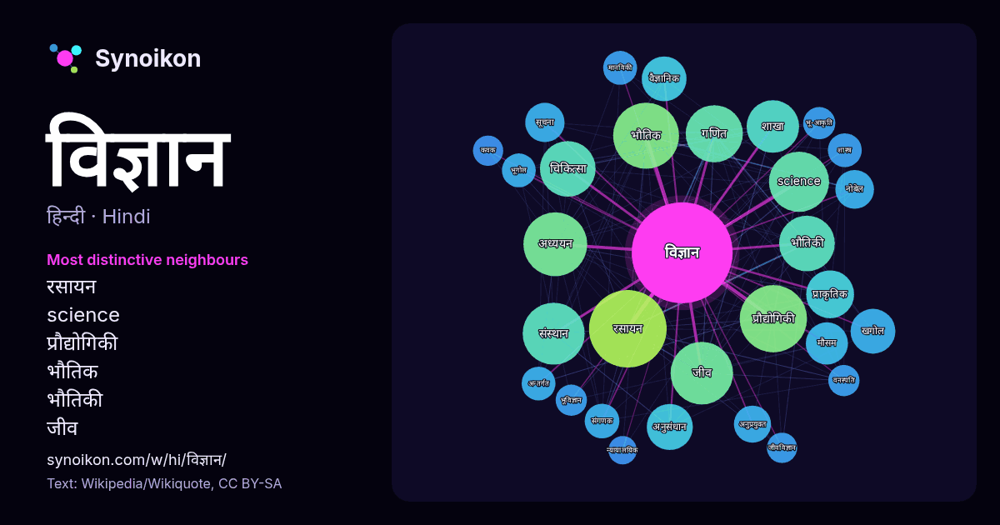

हिन्दी · लोकप्रिय शब्द
विज्ञान
“science” · विकिपीडिया, Wikiquote के 1444 प्रयोगों में इसके आसपास मिले शब्द।

सबसे विशिष्ट पड़ोसी
- रसायन 72×
- science 58×
- प्रौद्योगिकी 45×
- भौतिक 45×
- भौतिकी 43×
- जीव 40×
- गणित 39×
- खगोल 32×
- संस्थान 30×
- शाखा 27×
- अनुप्रयुक्त 24×
- चिकित्सा 23×
- नोबेल 23×
- संगणक 20×
- मानविकी 20×
- मौसम 19×
- अध्ययन 18×
- भू-आकृति 18×
- अनुसंधान 18×
- भूगोल 18×
× = सामान्य विकिपीडिया टेक्स्ट की तुलना में कितने गुना अधिक।
सबसे अधिक आने वाले पड़ोसी
- रसायन 105
- प्रौद्योगिकी 79
- भौतिक 76
- अध्ययन 71
- जीव 68
- संस्थान 67
- science 63
- गणित 57
- चिकित्सा 54
- भौतिकी 54
- भारतीय 51
- भारत 48
- शाखा 48
- क्षेत्र 43
- सामाजिक 43
- प्राकृतिक 40
- अनुसंधान 37
- शिक्षा 37
- खगोल 35
- वैज्ञानिक 35
संदर्भ में
- वाला विषय है। आधुनिक विज्ञान को सामान्यतः २ या ३ बड़ी शाखाओं में विभाजित किया जाता हैः भौतिक जगत् का अध्ययन करने वाला प्राकृतिक विज्ञान (उदाहरणः भौतिक शास्त्र Wikipedia snippets · विज्ञान
- कम्प्यूटर विज्ञान अथवा संगणक विज्ञान (अंग्रेज़ी: Computer Science, CS) संगणन और उसके उपयोग की ओर वैज्ञानिक और व्यावहारिक दृष्टिकोण है। यह जानकारी के पहुँच Wikipedia snippets · कम्प्यूटर विज्ञान
- सामाजिक विज्ञान (Social science) मानव समाज का अध्ययन करने वाली शैक्षिक विधा है। प्राकृतिक विज्ञानों के अतिरिक्त अन्य का एक नाम है 'सामाजिक विज्ञान'। इसमें Wikipedia snippets · सामाजिक विज्ञान
- राजनीति विज्ञान वह विज्ञान है जो मानव के एक राजनीतिक और सामाजिक प्राणी होने के नाते उससे संबंधित राज्य और सरकार दोनों संस्थाओं का अध्ययन करता है।। राजनीति Wikipedia snippets · राजनीति विज्ञान
- जीव विज्ञान या जैविकी जीवन का वैज्ञानिक अध्ययन है। यह व्यापक दायरे वाला एक प्राकृतिक विज्ञान है, परन्तु इस में कई एकीकृत विषय हैं जो इसे एक एकल, सुसंगत Wikipedia snippets · जीव विज्ञान
- विज्ञान का इतिहास से तात्पर्य विज्ञान व वैज्ञानिक ज्ञान के ऐतिहासिक विकास के अध्ययन से है। यहाँ 'विज्ञान' के अन्तर्गत प्राकृतिक विज्ञान व सामाजिक विज् … Wikipedia snippets · विज्ञान का इतिहास
- न्यायिक विज्ञान या न्यायालयिक विज्ञान (अंग्रेज़ी: forensic science) भिन्न-भिन्न प्रकार के विज्ञानों का उपयोग करके न्यायिक प्रक्रिया की सहायता करने वाले Wikipedia snippets · न्यायिक विज्ञान
- हिन्दी की एक विज्ञान पत्रिका है। विज्ञान प्रगति ने हिन्दी विज्ञान पत्रकारिता में एक महत्वपूर्ण मील का पत्थर स्थापित किया है। 'विज्ञान प्रगति' हिन्दी में Wikipedia snippets · विज्ञान प्रगति
और शब्द
- इतिहास
- ईश्वर
- कार्य
- कुत्ता
- गर्मी
- गाना
- घंटी
- घड़ी
- घोड़ा
- चाय
- चित्रकला
- छाया
- जंगल
- जलवायु
- जीवन
- तूफ़ान
- दर्पण
- द्वीप
- नक्षत्र
- नमक
- परिवार
- पहाड़
- पानी
- पैसा
- प्रकृति
- बगीचा
- बिल्ली
- भाषा
- भोजन
- माता
- मानचित्र
- मृत्यु
- मौन
- रेगिस्तान
- रेलगाड़ी
- रोटी
- वर्षा
- शक्ति
- शरद
- शहद
- शहर
- सड़क
- सत्य
- समय
- सर्दी
- सेतु
- स्वर्ण
- स्वास्थ्य
- हृदय
2026-10-09 को डिफ़ॉल्ट सेटिंग्स (±5 शब्द, मध्यम कॉर्पस) के साथ पहले से गणना की गई। इंटरैक्टिव मानचित्र इसे लाइव डेटा से ताज़ा कर सकता है।
मशीन-अनूदित इंटरफ़ेस; सुधारों का स्वागत है।